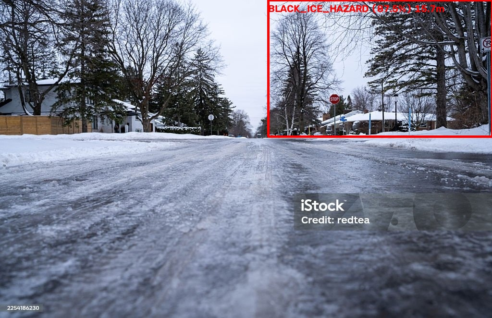
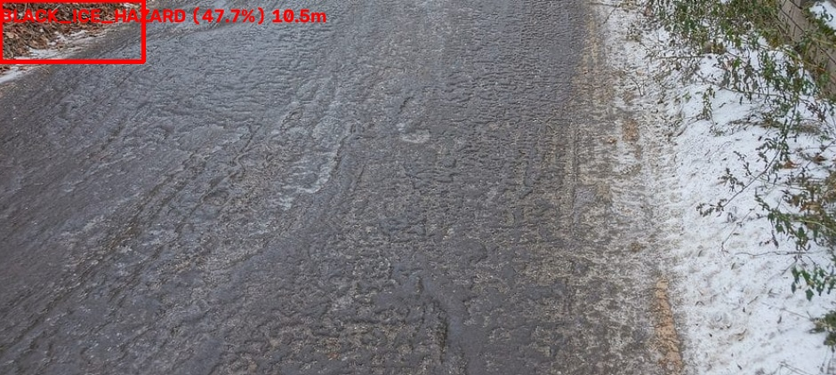

01
Spectral Ingestion
Simultaneously ingests 1080p RGB video, MLX90640 32×24 IR thermography grids, and 2D planar LiDAR sweeps into a synchronized circular buffer.
RGB · THERMAL · RANGESimultaneously ingests 1080p RGB video, MLX90640 32×24 IR thermography grids, and 2D planar LiDAR sweeps into a synchronized circular buffer.
RGB · THERMAL · RANGECalibrates asphalt emissivity (ε = 0.95) and screens road temperature against the critical risk window [−10°C, +3°C] to eliminate false alarms on warm wet roads.
CALIBRATED RISK ENVELOPERuns custom-trained YOLOv8 neural network on incoming frames to detect subtle ice sheens, regressing precise patch bounding boxes and confidence scores.
NEURAL OBJECT DETECTIONCasts laser rays into the detected patch sector. Smooth glazed black ice deflects 905nm pulses away, causing zero-return specular dropouts that confirm hazard presence.
SPECULAR DROPOUT SIGNATUREHow the multi-sensor pipeline differentiates life-threatening invisible black ice from harmless warm rainwater using synchronized thermal and LiDAR physics.

Transparent ice layer seamlessly bonds over dark asphalt. Visual sheen alone is ambiguous, but MLX90640 records −2.5°C and LiDAR registers zero-return specular deflection.

Wet asphalt produces high optical glare resembling ice. The calibrated thermal filter verifies surface at +6.8°C, safely discarding the false alarm before triggering actuation.
| Timestamp | Road Condition | Confidence | Surface Temp | Distance | Status |
|---|---|---|---|---|---|
| No scans recorded yet. Connecting to vehicle feed... | |||||